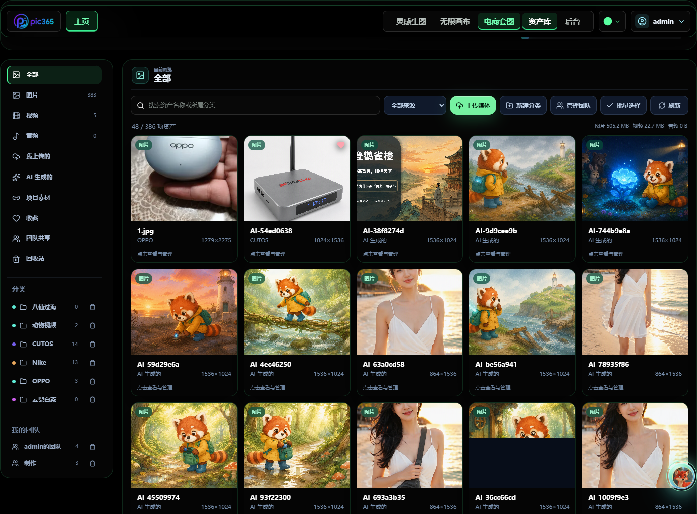
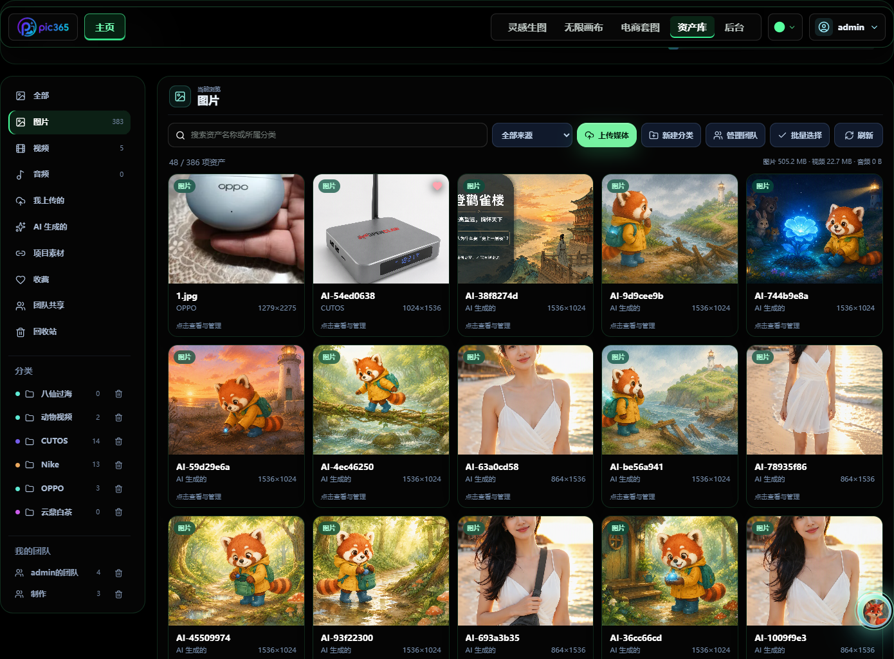
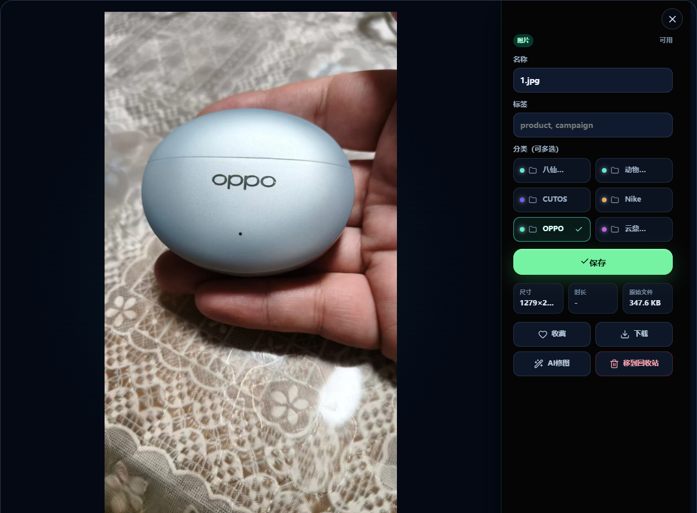
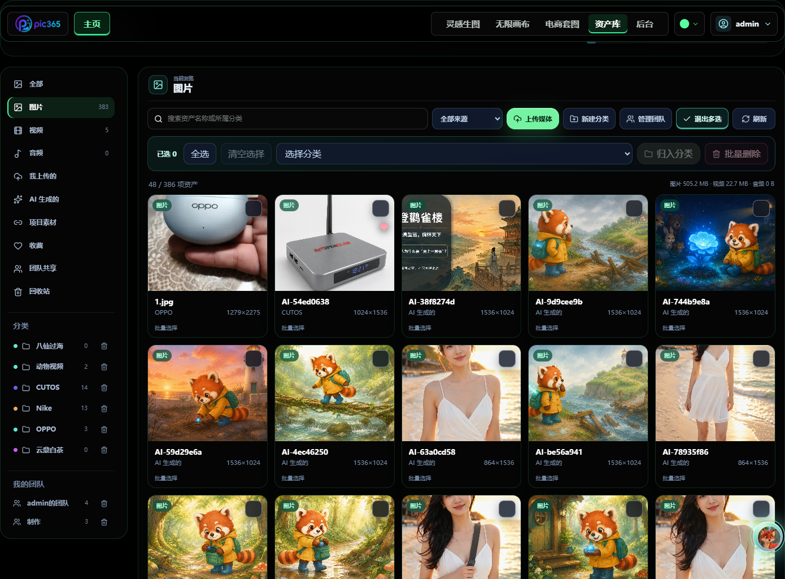

按类型浏览
“全部、图片、视频、音频”用于快速过滤媒体类型，数量会显示在对应入口旁。
媒资管理统一存放上传文件、AI 生成内容和项目素材，并通过类型、来源、分类、标签、收藏和团队权限建立可复用资产库。

“全部、图片、视频、音频”用于快速过滤媒体类型，数量会显示在对应入口旁。
区分“我上传的”“AI 生成的”和“项目素材”，便于判断素材来源和后续用途。
搜索资产名称或所属分类，并配合顶部来源筛选缩小结果。左侧导航切换后，右侧标题会明确当前查看范围。
“上传媒体”支持一次选择多个文件。上传完成后建议立刻补充名称、标签和分类，避免资产长期处于未整理状态。


使用能被团队理解的名称，建议包含主体、用途和版本，例如“蓝色耳机_正面_商品母版”。
标签适合记录跨分类特征，如 product、campaign、春季、已审核。名称、标签和分类应各司其职。
分类支持多选。当可选分类超过 6 个时，使用下拉多选列表，避免面板过长；保存后一个资产可同时出现在多个分类。
图片可直接进入 AI 修图，也可作为灵感生图或画布的参考素材；下载会获取原始或系统提供的可下载版本。

| 操作 | 会发生什么 | 不会发生什么 |
|---|---|---|
| 新建分类 | 增加一个整理入口，可关联多个资产 | 不会复制原文件 |
| 删除分类 | 分类关系被移除，资产回到未分类或仍保留在其他分类 | 不会删除资产原件 |
| 收藏 | 资产出现在“收藏”范围 | 不会改变来源和分类 |
| 批量归类 | 多个选中资产统一增加或调整分类 | 不会修改图片内容 |
| 批量删除 | 有权限的资产进入回收站 | 他人共享且无所有权的资产不会被越权删除 |